Docker实践
注: maybe need magic！
借助Koyeb部署Docker应用
Koyeb是一个致力于简化应用部署和运维流程的无服务器平台，它通过提供全球部署、Docker容器支持、免运维服务以及友好的开发者体验，帮助用户快速、经济高效地将应用程序部署到云端，并根据需求自动扩展
Koyeb对每个用户提供了一定的免费资源，用以部署应用，接下来的部署实践应用是名为Stirling-PDF的一个开源在线Pdf工具箱(镜像名为s-pdf)
1. 登录/注册Koyeb账号
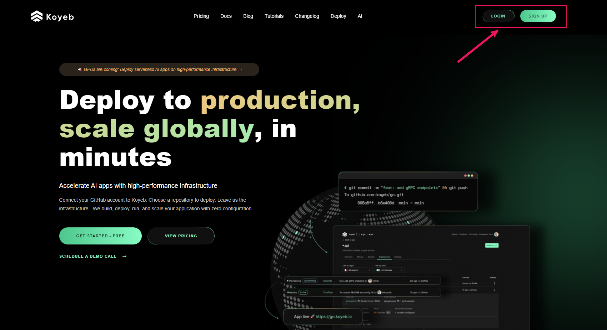
注册时可以使用Email或者Github绑定方式：

填写相关信息，这里organization's name是用户唯一的：
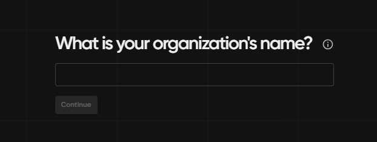
下面这一页可以随意填写：
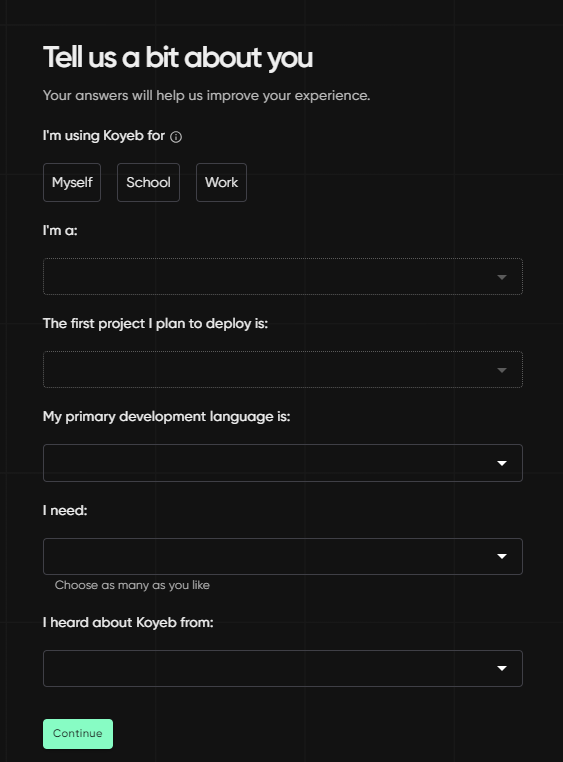
2. 创建容器应用并部署
选择部署Docker应用：

选择Create Web Service：
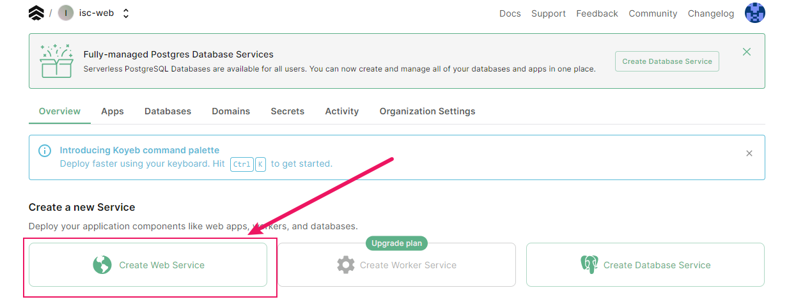
填入s-pdf的镜像名称(带标签)frooodle/s-pdf:latest:
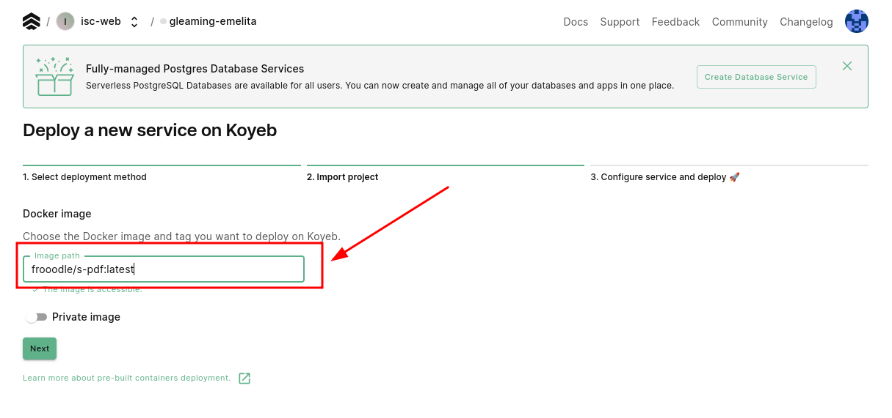s-pdf镜像地址" width="90%">
这里配置一下容器，开放端口8080:
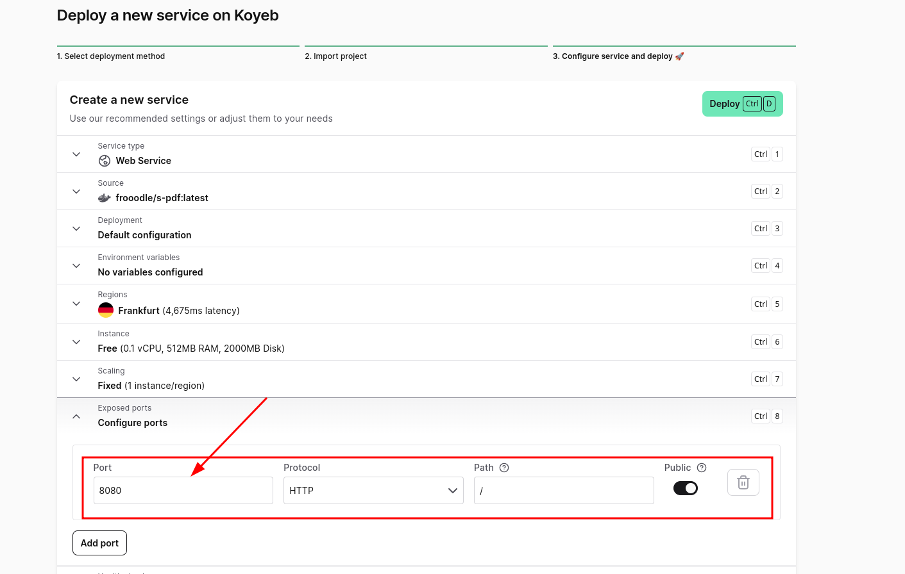
然后点击右上角Deploy即可自动部署
3. 访问应用
在我们对Koyeb的体验下，使用免费额度部署应用会比较慢，甚至可能需要等待20分钟~50分钟不能，这里耐心等待即可
如果服务状态出现Error，可以检查上述配置是否有问题，再重新部署一下
部署好之后应用状态应该是healthy的：
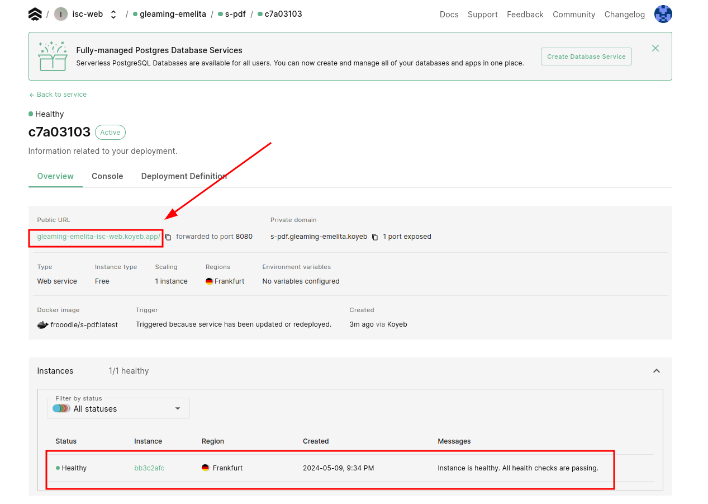
使用给出的url路径即可跳转访问使用(右上角有语言切换设置):
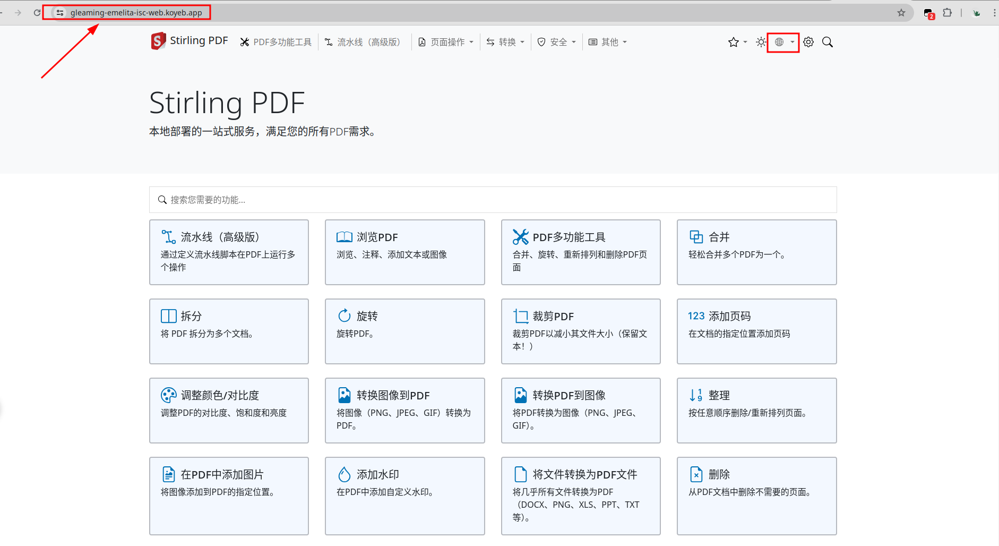
借助Render部署Docker应用
Render作为一个云服务提供商，提供了一个统一的平台来构建和运行各种应用程序和网站。这个平台的特点包括免费的
TLS证书、全球内容分发网络(CDN)、私有网络以及从Git自动部署等功能，帮助开发者更高效地管理和运行他们的在线项目。
在这个平台上我们将部署一个名为it-tools的在线工具箱
1. 登录/注册Render账号
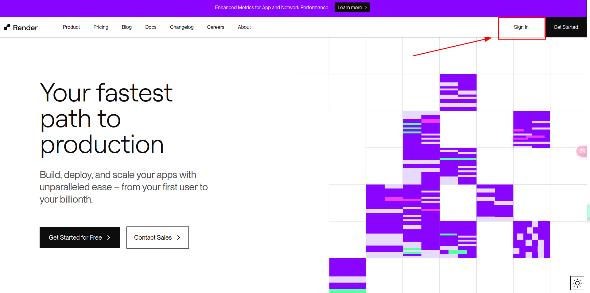
点击右上角进行注册，可以使用现有的其他平台账号比如Github绑定，就能自动识别到你的邮箱
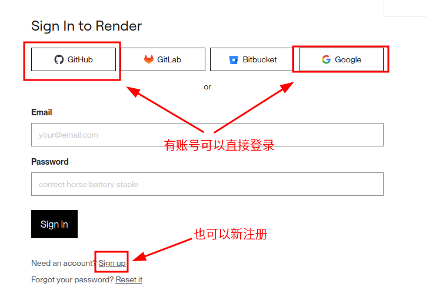
中途会有一个邮箱验证，收到邮件之后认证一下即可
2. 创建容器应用并部署
注册好之后选择新建Web Service：
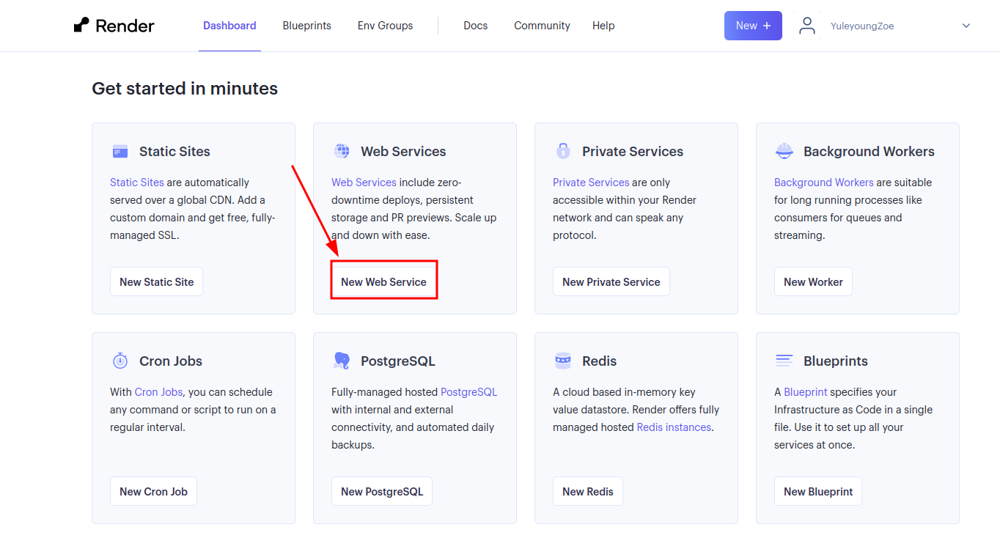
选择从现有的镜像创建：
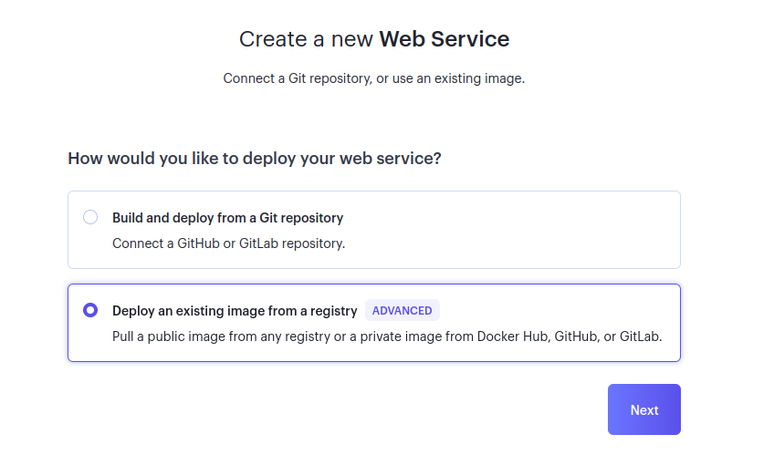
同样，填入it-tools的镜像名称(带标签)corentinth/it-tools:latest:
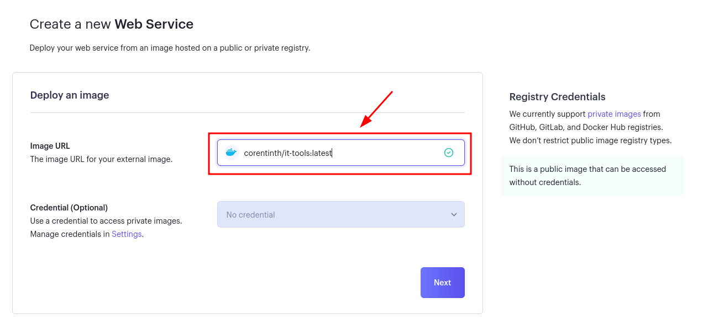
进行简单的设置，Name可以随意设置，Region建议设置为新加坡，同时设实例类型为Free：
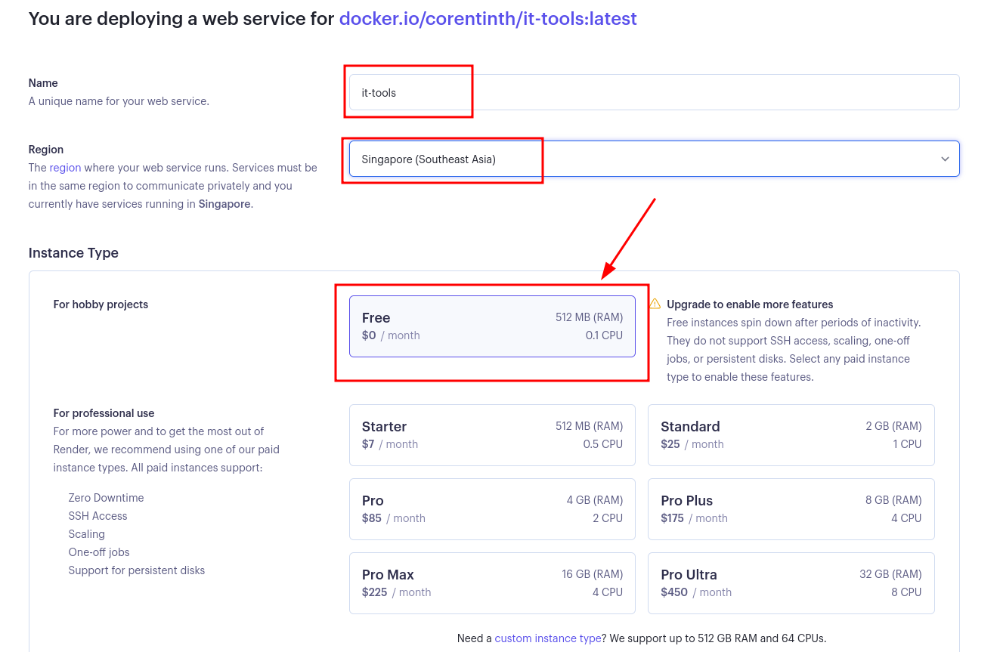
点击Create Web Service即可自动创建：
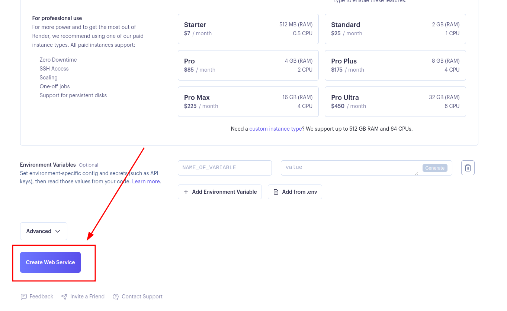
一般情况下在应用不多时Render构建服务较快，且成功标志为状态绿色Live
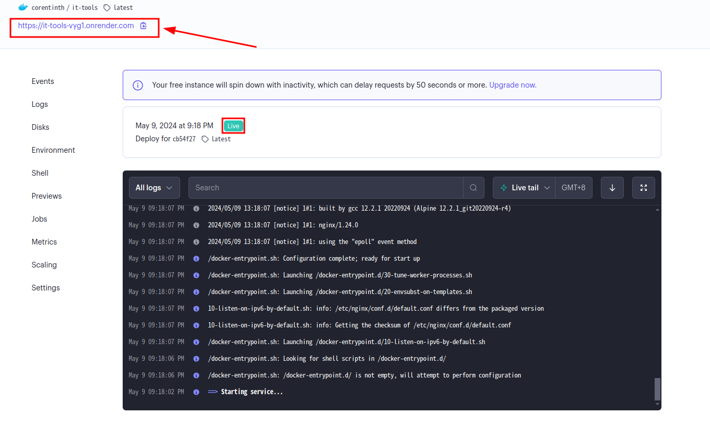
3.访问使用工具箱
同样使用给出的url即可成功访问使用：
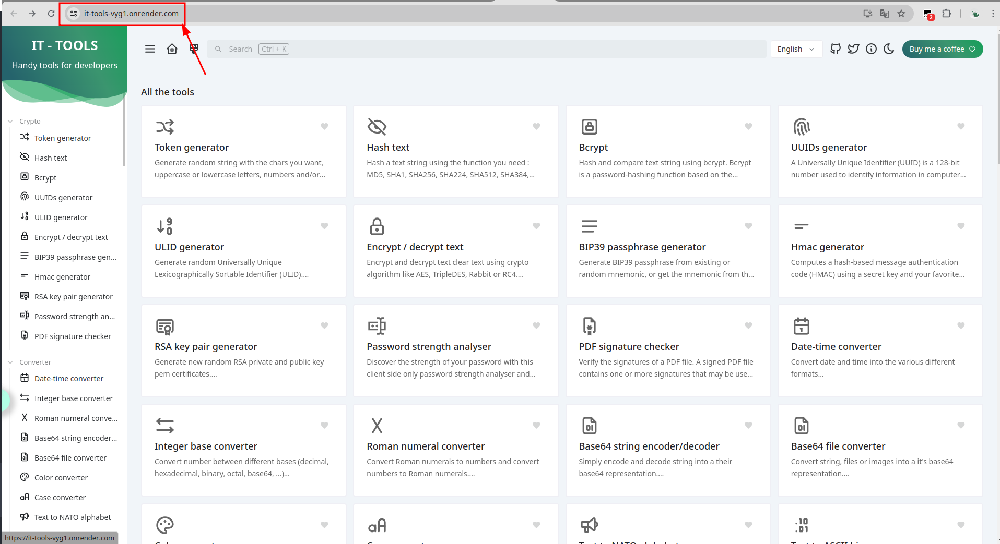
说明
安排这样的平台部署顺序我们是有意而为之，因为Render站点的免费额度有一定限制，有一点就是如果服务部署后，在每15Min内没有流量访问，后台就会自动将服务暂停，后续有访问时再重启服务，还有像一个月服务免费部署额度上线为720Hours(对，就是30天，即限制只能完整部署一个服务，详见官方说明)，所以就在此部署比较轻便的it-tools，即使挂了，重启也是比较快的；而像Koyeb就没有这种限制，只是单纯的配置低而已。所以，最好能有一个监控(比如uptime-kuma)，定时对Render上的服务进行心跳检测和保活操作
小结语
-
如果有需求或者感兴趣的话，可以看看别的应用部署平台，国内国外有很多，价格有高有低，还请自行评估。
-
如果手上有服务器的话，也可以装装
Docker，部署应用非常快、方便，数据迁移快捷 -
如果需要在
Windows系统上安装Docker，可以自行查找教程，对于每个人设备不同，步骤和设置亦不一样